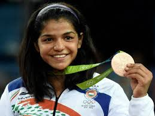

Personal info
Sakshi Malik (born 3 September 1992) is an Indian freestyle wrestler. At the 2016 Summer Olympics, she won the bronze medal in the 58 kg category, becoming the first Indian female wrestler to win a medal at the Olympics and the fourth female Olympic medalist from the country.She is a part of the JSW Sports Excellence Program, along with fellow female wrestlers Vinesh Phogat, Babita Kumari and Geeta Phogat.
In the early hours of Thursday, India acquired its first medal of the 2016 Summer Olympics. Sakshi Malik was the one to do it for the country, whose athletic contingent has thus far flattered to deceive in Brazil, by capturing the bronze medal (through Repechage) in the 58-kg category of Women’s Freestyle Wrestling. After losing the Quarterfinal to eventual finalist Koblova Zholobowa, Sakshi went on to win the Repêchage against Mongolia’s Orkhon Purevdorj, and then Kyrgyzstan’s Aisuluu Tynybekova.
The medal is rendered all the more significant in that it was won after Vinesh Phogat, Sakshi’s wrestling peer in the 48-kg category, was forced to retire hurt early into her Semifinal bout after a promising display, earlier on Wednesday.
Sakshi Malik scripted history by becoming the first woman wrestler from India to bag an Olympic medal and only fourth female athlete from the country to climb to the podium at the biggest sporting event in the world. Overall, Sakshi has won India’s fifth wrestling medal in the Olympic Games. It is India’s 25th medal in Olympic Games.
Malik had previously won the silver medal at the 2014 Commonwealth Games in Glasgow, and the bronze medal at the 2015 Asian Wrestling Championships in Doha.After joining Gopichand's badminton academy, Sindhu won several titles. In the under-10 years category, she won the 5th Servo All India ranking championship in the doubles category and the singles title at the Ambuja Cement All India ranking. In the under-13 years category, Sindhu won the singles title at the Sub-juniors in Pondicherry, doubles titles at the Krishna Khaitan .All India Tournament, IOC All India Ranking, the Sub-Junior Nationals and the All India Ranking in Pune. She also won the under-14 team gold medal at the 51st National School Games in India.
Early Life
Malik was born on 3 September 1992 in Mokhra villageof Haryana's Rohtak district to Sukhbir, a bus conductor with Delhi Transport Corporation, and Sudesh Malik, a supervisor at a local anganwadi (health clinic).According to her father, she was motivated to take up wrestling from seeing her grandfather Badhlu Ram, who was also a wrestler.She began training in wrestling at the age of 12 under a coach, Ishwar Dahiya, at an akhara in Chhotu Ram Stadium, Rohtak. Her coach and she had to face opposition from the locals for having taken up a sport "not for girls".
In an interview shortly after the Rio Olympics, Malik said she was engaged to be married to a fellow wrestler Satyawart Kadian later in 2016. Satyawart Kadian is also an international level wrestler and has won medals in Asian Games and Commonwealth Games.
Home Page
Next
Previous